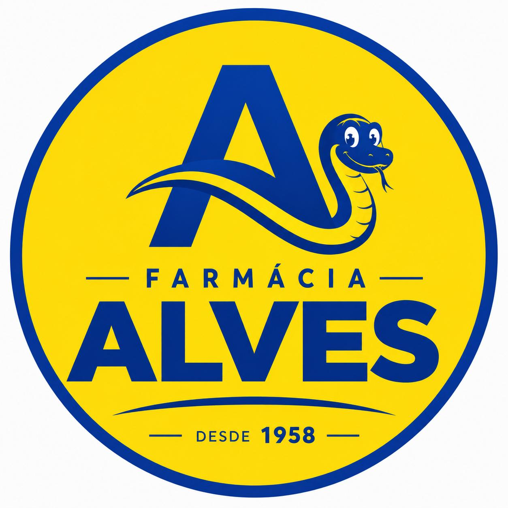
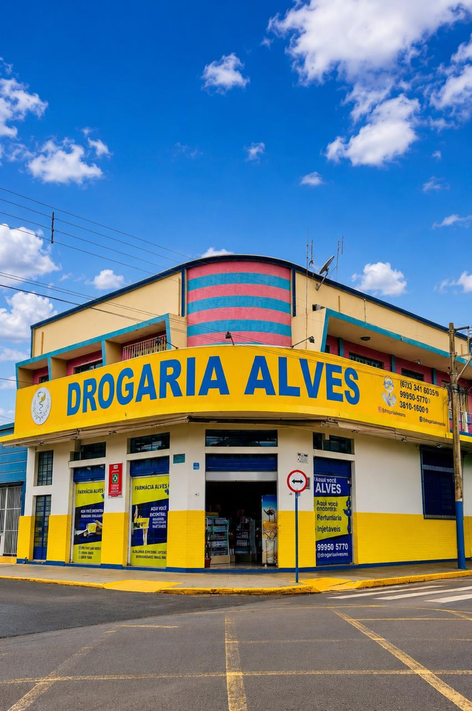
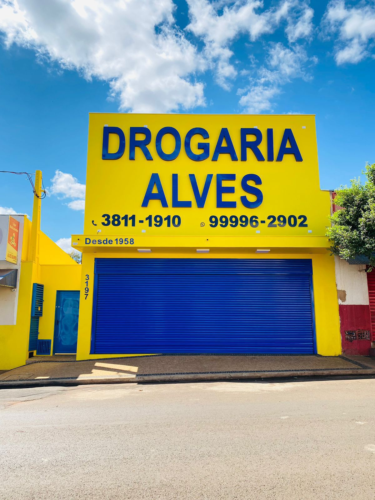

Uma farmácia que atravessou gerações
A Farmácia Alves faz parte do cotidiano de São Joaquim da Barra desde 1958. Pais, filhos e netos encontraram no balcão da Alves um atendimento feito com carinho, orientação e compromisso com a saúde.

Drogaria Alves Desde 1958
Farmácia tradicional de São Joaquim da Barra
Desde 1958 trabalhando pela saúde da sua família, com atendimento próximo, confiança e cuidado em cada geração.
A Farmácia Alves faz parte do cotidiano de São Joaquim da Barra desde 1958. Pais, filhos e netos encontraram no balcão da Alves um atendimento feito com carinho, orientação e compromisso com a saúde.
"Desde 1958 trabalhando pela saúde da sua família."
A história da Farmácia Alves começou em 1958, quando foi fundada por João Lopes Reis, em São Joaquim da Barra. Desde então, a farmácia passou a fazer parte do cotidiano e da história de muitas famílias da cidade.
Em maio de 1985, a Família Bertolotto assumiu a administração, iniciando uma nova etapa dessa trajetória, sempre mantendo como essência o atendimento próximo, a confiança e o cuidado com cada pessoa que entra pela porta.
Com o passar do tempo, além da tradicional unidade do Centro, na Praça Magino Diniz Junqueira, 134, a Farmácia Alves ganhou uma segunda unidade no Jardim Paulista, na Rua São Paulo, 3197.
Medicamentos, orientação farmacêutica e serviços pensados para facilitar a rotina de clientes, famílias e empresas conveniadas.
Aplicação de injetáveis a domicílio, conforme orientação e necessidade do cliente.
Aferição gratuita da pressão arterial e medição de glicemia.
Descontos especiais para conveniados, empresas da cidade e programas de laboratórios.
Medicamentos gratuitos ou subsidiados conforme as regras do programa.
Atendimento farmacêutico e orientação aos clientes no balcão.
Medicamentos, perfumaria, higiene pessoal e produtos para saúde e bem-estar.

Atendimento presencial e pelo WhatsApp para clientes de São Joaquim da Barra e região.
Selecione uma das linhas da Drogaria Alves para continuar a conversa.